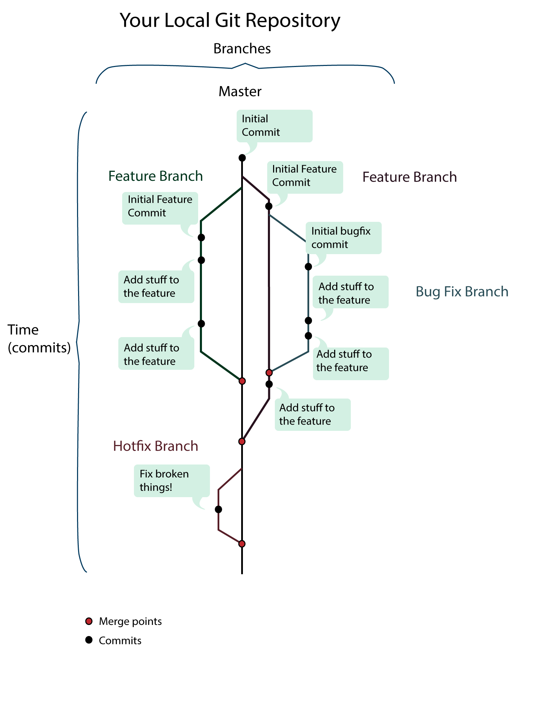

GIT + TerminalBasic Terminal Commands for Linux
To get started, open up your terminal and try out the below commands.
Print working directory
pwdUse this command any time you are unsure where you are currently in your file structure. pwd stands for Present Working Directory.
List files
lsUse the 'ls' command to see all the directories and files that are in your current directory. To clear things up, a directory is just a synonym for a folder.
List files (long form)
ls -lUse the 'ls -l' command to see a long form, representation of the directories and files inside your current directory.
You will see some cryptic messages on the side. The 'drwx' thing that you see are just file permissions for that particular directory or file. For example the first set of '-'s that follow the 'd' are the permissions allowed for the user. If it says 'rwx' it means the user is allowed to read, write and execute the file. If it just says 'r--' means that the user can only read the file. The second set of three '-'s represent the permissions for a group. The last three '-'s represent the permissions for people who are not the user and are not in the particular group that is allowed. We will have to be changing some of these permissions when we deploy our applications in the cloud. For now, it's important to know that there are different file permissions which can either be read, write, or execute, and these permissions can vary depending on if you are the user, or in the group specified in the listing.
List all files (long form)
ls -aUse the 'ls - a' command to see ALL the files. Linux flavored operating systems hide files that start with a '.' by default. This command will show all the previous files and hidden files if there are any. The files that start with a '.' are often configuration files.
Changing to the current directory
cd .From the previous command, we saw that 'ls - a' will list some interesting file names like '.' and '..' The '.' is reserved to represent the current directory that we are in. It you run the 'cd . ' and then run the 'pwd' command, you'll see that we didn't move to a different directory. We told the computer to change our directory to our current directory which means don't go anywhere!
Changing to the parent directory
cd ..Like the 'cd . ' command, the '..' is reserved to stand for the parent directory of the current directory that we are in. If you run this command and then run the 'pwd' command, you'll see that we navigated up one directory(folder) structure. If you feel like the File Structure is starting to resemble the DOM (Document Object Model) it's because they are very similar.
Changing to the root directory
cd /This command will changes to the root directory of your computer. From this folder you can access your application folders.
Changing to any folder
cd folder_nameThe 'cd' command followed by a space and name of the folder you want to enter will move you into that directory if it exists. This example would move you into the 'folder_name' directory.
Making a new folder
mkdir new_directory_nameThis command will make a new directory named 'new_directory_name'. Whatever argument you pass into this command will be the name of your new file. After making the directory, you could run 'cd new _folder_name'' to enter into that directory.
Delete an empty directory(folder)
rm directory_nameDelete a non-empty directory(folder)
rm -rf directory_nameIf you try to delete a folder with contents inside you will get an error! Our computer wants us to say more explicitly to delete this directory and everything inside of it by passing the '-rf' option. Be careful with this command as could it accidently delete files you didn't intend to delete or delete some config files that you wouldn't want deleted at all!
Creating a new file
touch index.html touch style.cssThe 'touch' command will create a new, empty file with the name and extension type that you specify. You can make any type of file if you provide the extension type. Run the above commands, and then run 'ls' and you will see your new files in the listing.
Removing a file
rm index.htmlThe 'rm' command removes any file by provided the filename and extension.
Renaming a file
mv index.html new_name_index.html mv new_name_index.html ../new_name_index.htmlThe 'mv' command has two uses. First, you can rename a file by first providing the file's name and then providing what you want the file to be renamed to. In the first example, index.html would be renamed to new_name_index.html. Second, it can be used to move a file to a different folder. In the second example, new_name_index.html would be moved up one directory with the same name. In either case, think of this command as moving a file - into it's current directory with a different name or into a different directory with the same or different name.
Copying a file
cp index.html copy.htmlThe 'cp' command will copy a file into the current directory with the new name you provided. In the example, say your were in your Desktop directory and you ran the above command. The Desktop directory would now have index.html and copy.html in it.
Copying a directory
cp -rf directory_name copy_directory_nameCopying a directory is similar to a file but we need to pass the '-rf' option in order to copy all the internal contents of the directory. First provide the name of the directory you want to copy and then the name of the copy.
Open current directory in your GUI
open .The 'open' command will open your current directory in your GUI. Likewise, you could open a directory inside your file name by running something like "open file_name". *Note* This command will only work on your local machine, but not on your virtual machine in the Cloud when you are deploying.
Last note
Especially when you are navigating the terminal in your virtual machine in the Cloud, you are going to have some of these commands through back you an error. When that happens, prefix your command with 'sudo' which is telling the computer that you are the Super User. 'sudo' stands for 'Super User do'. This will become more relevant when we start deploying applications in the cloud but just know that something like 'sudo' exists.
//for example you could run all the same commands but prefix them with sudo sudo mkdir test sudo touch index.html sudo rm -rf test
Installation & Set-Up
(For windows users, this might seem a little familiar, but make sure you successfully installed git anyway!)
To get started, we need to install Git on your console.
Visit this link and follow the directions for your operating system: http://git-scm.com/book/en/v2/Getting-Started-Installing-Git
To verify if your installation worked correctly! Open up your terminal and type 'git' at the command line. If you see a bunch of options and list of git commands, you're installation was successful!
The first thing you should do after installing Git is to set your user name and e-mail address. This is important because every Git commit uses this information, and it’s immutably baked into the commits you pass around.
Enter your shell (Terminal or Git Bash) and enter the following:
git config --global user.name "John Doe" git config --global user.email johndoe@example.comYou can verify that Git stored your settings by passing git config the --list parameter:
git config --global --listThose are the only two required configuration values, but Git allows you to configure more than 130 different settings. Most of these you’ll never need to tweak, but there is one extra change that is useful if you like color-coded output.
The setting color.ui is used to control colors in the user interface of Git. Setting it to "auto" adds color codes around the various output of Git whenever you’re viewing the output in the terminal.
You can turn this setting on with the following command:
git config --global color.ui "auto"An Overview of Git
Git Commands
The Repository
The repository is the place where the version control system keeps track of all the changes you make. Most VCSs store the current state of the code, along with when each change was made, who made it, and a text log message that explains why they made the change.
You can think of a repository like a bank vault and its history like the ledger. Each time a deposit—what is called a commit in VCS lingo—is made, your VCS tool adds an entry to the ledger and stores the changes for safekeeping.
Working Trees
So far we’ve discussed the repository and talked about all the files you’re storing in it, but we haven’t talked about where you make all of your changes. This happens in your working tree.
The working tree is your current view into the repository. It has all the files from your project: the source code, build files, unit tests, and so on.
Creating your first version controlled project
1) Creating a Repository
First we create a folder to house our project and navigate to that folder.
mkdir new_project cd new_projectTo create a repository, all we need to do is type
git initwhich initializes a repository in that folder.
The repository is simple a new subdirectory named
.gitthat contains all of your necessary repository files in your project's directory. Right now the repository is empty.2) Making Changes
Now create a file in that directory called index.html with the content
<html> <head></head> <body> <h1>Hello Git</h1> </body> </html>The current state of index.html is modified.
To change the state to staged (which means ready to be committed), we tell Git to add the file to its index.
git add index.htmlNow to take a snapshot of the current state of all the staged files, we run:
git commit -m "index.html added"And the state of index.html becomes committed.
Commits are the individual pieces of history stored by the repository. Each one marks the progression of your code. Git stores your name and email address—from the configuration we did earlier—and adds a message to each commit.
That’s what the -m and string in the earlier command are for. The commit message is 'index.html added'. Properly written log messages are the killer feature of any version control system. They’re a place to explain the reason of your commit. What does the new file do? Why did you change the code?
Now to see the list of your commits, you can run the command
git logThis will give you a list of all your commits & the messages you put in. Here's an example:
commit bdf8ce93d2af928e8a430629225e3bd754429bd8 Author: Eylem Ozaslan <eylem.ozaslan@gmail.com> Date: Sun Jun 30 09:52:58 2013 -0700 index.html addedThe first line here shows the commit name. Commit names are SHA- 1 hashes generated by Git to keep track of a commit. Git uses these hashes to make sure that each commit identifier is completely unique. (Tip: The first leading seven characters that are displayed by git log are normally unique enough that you can use them without having to use the full forty-character hash.)
The second line in the git log output is the commit’s author info, the third is the date the commit was made, and the final bit of information is the commit log message from the commit
Making Changes
Tracking changes to your files over time is the whole reason for using a VCS. You make changes to the source code, rerun your unit tests to make sure your changes don’t have any side effects, and then commit those changes.
Committing a change adds a new revision to the repository and stores your log message explaining what the change did. This gives you a record to go back through if you ever need to figure out why a certain change was made or when a bug was introduced.
Let's make some changes to our index.html file and add some information to our head.
<html> <head> <meta charset="UTF-8"> <title>Version Control</title> </head> <body> <h1>Hello Git</h1> </body> </html>Now that we've made changes to our file, its state is modified again.
What if we forget what state our files are in? Git has a status command that allows us to see what's going on in our working tree:
git statusThis should return something like:
#On branch master #Changes not staged for commit: modified: index.html no changes added to commit (use "git add" and/or "git commit -a")
Now if we add index.html to the staging area: git add index.html
and run the status command again: git status
it will return something like this: # On branch master # Changes to be committed: # (use "git reset HEAD <file>..." to unstage) # modified: index.html</file>
Now to commit these changes: git commit -m "added meta charset and title tag to index.html"
Looking at the Past
Your Commit History
The commit log is the most common way for you to inspect what has happened to your repository. Git shows each new commit’s log entry, along with who made the commit, when, and optionally the changes that were made.
It’s displayed in a reverse-chronological order, like a blog. You can provide all sorts of parameters to filter the log, but let’s start with the basics. Just type git log at the command prompt from within your working tree:
git log commit 0bb3dfb752fa3c890ffc781fd6bd5dc5d34cd3be Author: John Doe <johndoe@gmail.com> Date: Sat Oct 4 11:06:47 2008 -0500 added css file for index.html commit 18f822eb1044761f59aebaf7739261042ae10392 Author: John Doe <johndoe@gmail.com> Date: Fri Oct 3 10:16:27 2008 -0500 added index.html
- The number following commit is called the commit hash and it's what we use to refer to a particular commit.
- Sometimes our log messages aren’t as descriptive as we thought they were when we view them six months later. Often, viewing the code that changed in conjunction with the log message can help jog our memories. Adding the -p option tells Git to display the diff that revision created.
- Often you need to view only a set number of commits. You can add -1 to the log command to limit the log to one commit, -2 to limit it to two commits, and so on. For example, git log -10 shows the last ten log entries.
Looking at How Much has Changed:
There’s another cool option for git diff that prints some statistics about the changes that have been made. Just add the --stat option to see what changes have been made since a particular commit.
Ex: To see how much has changes since commit 18f822eb1044761f59aebaf7739261042ae10392, we run:
git diff --stat 18f822eb1044761f59aebaf7739261042ae10392 about.html | contact.html | hello.html | index.html | 4 files changed, 51 insertions(+), 9 deletions(-) 15 +++++++++++++++ 23 +++++++++++++++++++++++ 13 +++++++++++++ 9 ---------<br />This is a great way to see the amount of code that has been touched since a particular commit.
Reverting
Before we start, a word of caution: be careful how you use the commands in this section if you use Git like you would a centralized repository and push every commit back upstream. Changing the history after you’ve shared it can lead to major headaches when others try to sync against your changes.
(This paragraph will make sense once you're familiar with Github!) One of the values of completely distributed development is that you share only what is ready. Make sure changes are ready before you push them. By keeping all your changes local until they are ready, you leave yourself the option of rewriting your repository’s history without worrying how it affects others.
There are 2 ways to rollback to a previous commit: revert and reset. We will first go over revert, and it's recommended that you try to use revert over reset whenever possible.
REVERT
Sometimes code doesn’t work out. It requires a certain architecture or introduces a new third-party software dependency that the rest of the team isn’t on board with. If you’ve committed your changes already, you need to undo the commits with the new change, or revert them.
The simplest way to revert an existing commit is the git revert command. It “reverts” a commit by creating a new commit in your repository that reverses all the changes made by the original commit.
Normally Git commits the reversal immediately, but you can add the -n parameter to tell Git not to commit. This is useful when you need to revert multiple commits. Just run multiple git revert commands with the -n parameter, and Git stages all the changes and waits for you to commit them.
You must provide it with a commit name so it knows what to revert. For example, if you wanted to revert the commit 540ecb7 and HEAD, use the following. Always revert backward—the most recent first. That makes sure you don’t have any unnecessary conflicts to work through when reverting multiple commits.
git revert -n HEAD Finished one revert. git revert -n 540ecb7 Removed copy.txt Finished one revert. git commit -m "revert 45eaf98 and 540ecb7" Created commit 2b3c1de: revert 45eaf98 and 540ecb7 2 files changed, 0 insertions(+), 10 deletions(-) delete mode 100644 copy.txtRESET
Right as you hit the Enter key, you realize you’ve just committed a configuration file with your private password in it. We’ve all been there.
Git assumes we make mistakes like this and allows us to reset the repository to the state we want with reset. The command git reset takes a commit name as its parameter or defaults to HEAD if you don’t provide one.
Or using a commit hash as a name to reset to a particular commit we run:
git reset <commit hash> --hardTip: So far we've been using the full hash whenever we needed to. However, the first leading seven characters that are displayed by git log are normally unique enough that you can use them without having to use the full forty-character hash. So we can run something like this:
git reset 6c77676 --hardIf you only want to reset the changes to a particular file and not the whole project, you can run:
git reset <commit hash> <filename> --hardWarning!!! When we revert our changes using this command, the changes we revert are GONE FOREVER, ERASED FROM THE LOG, UNRECOVERABLE. This is what makes reset perfect for those situations when you want to UTTERLY AND COMPLETELY ERASE SOMETHING and A TERRIBLE IDEA FOR ANYTHING ELSE.
Here's is another way to visualize what your Local Git workflow might look like:

States
Git has three main states that your files can reside in: committed, modified, and staged.
- Modified: You have changed the file in your Working Directory but have not added it yet.
- Staged: You have marked a modified file to go into the Staging Area for your next commit.
- Committed: Data is safely stored from the Staging Area into your local .git Directory.
The basic Git workflow goes something like this:
Let's look at what add and commit do in a little more detail.
Add: In Git, an add is what tells your repository, "hey, I want you to add these changes to the next version of the project!" You add files to the staging area to have them included in your next commit (see below). If you add a file and then make more changes to it, you must re-add the file to include all of your recent changes.
To add a file a to the staging area you would do something like this:
// to add a specific file, index_html, to staging area: git add index.html // to add all changed files to the staging area git add .
Commit: Once you feel your project has reached a point where it should be saved, you tell Git to commit all your files in the staging area. This means every file you have added will be updated with the changes you have made. With every commit, you create another local version of your project. Additionally, Git clears the staging area each time you do a commit.
git commit -m 'Name to identify commit goes here'
Summary of different syntaxes
- forking - similar to git clone but mainly used to create a copy of a repository/project that you can then modify independently without changing the original repository. This may be done with your own repository, someone else's open source repository, or a private repository that somebody else has shared with you.
- pull request - once you've made your changes to your forked repo, you can make a pull request to the owner of the original repository you forked from. Afterwards, the owner will decide whether or not to include your changes into their repository.
- git branch ___ - creates a new branched named ___
- git merge ____ - tells Git to merge the codes in branch ____ to whatever branch you're currently on
Why Branch?
When I was a kid, one of my favorite book series was the Choose Your Own Adventure series. Readers of these books will remember the way they work. You read a few pages and then make a choice. Does Joe enter the dark cave? If so, turn to page 42. Or does Joe turn around and leave the forest? If so, turn to page 23.
You can think of your repository like a book. You can read it from start to finish to get the entire story of your project. Branches are like the Choose Your Own Adventure books. There are multiple ways the story could go, each with a different history.
So, how do these alternate histories fit into your work with a version control system? Let’s say you have a few ideas to rewrite a calendar component in your project. I’ve never worked on a project that got the calendar portion of the code right the first time, but even if it’s not the calendar, there’s always something on a project that can be done better with the benefit of hindsight.
To make these changes, you need to get the rest of the team on board, and then you have to track your changes. You can copy all the code into another directory and start making changes, but then there’s no way to track the changes you make and—more importantly—undo the bad changes you make while experimenting.
This is where branches come in. You can create a branch that marks a point where the files in the repository diverged. Each branch keeps track of the changes made to its content separately from other branches so you can create alternate histories.
The branch can exist for the rest of the project or for just a few hours. It can be merged into another branch, but there’s no hard rule saying a branch has to be merged.
Sometimes, you don’t even want them to merge. It might be a branch to track an older major version of your project, or it could be an experimental branch that may end up getting deleted.
Just like everything in Git, branches can be created locally without having to share them. Creating local branches and not sharing them does have its benefits. You can experiment with changes and then share them when they’re something worth sharing or quietly delete them if the experiment didn’t work out.
Branching
Branches are a way to maintain alternate histories of the project you’re working on. When you initialize a new Git repository, by default a branch named "master" is created. You can also create additional branches manually for working on different features of your project.
You should create a new branch every time you:
The command to create a branch is git branch, and it takes two parameters: the name of the branch you want to create and the name of the branch you want to create it from:
git branch <new branch_name> <old branch>
So the command to run to create a branch called new_feature from our master branch would be:
git branch new_feature master
then in order to make our new branch the current branch we would run:
git checkout new_feature
Alternatively to create a new branch from our current branch and set our new branch as the current branch in one command, we could run the following command:
git checkout -b <new_branch_name>
Say we were on our master branch and we ran:
git checkout -b new_feature
Now, that we've learned to make new branches, there are two important commands to navigating through our branches.
First, to see all the branches that exist:
git branch
For example, if we had 3 branches, master, add_css, add_jquery and we were currently on the add_jquery branch, the output would look something like below(note our current branch is starred):
add-css * add-jquery master
Now in order to switch to a different branch:
git checkout <branch_name> // the output will look something like Switched to branch 'branch_name'<br>
Make a new directory called branching_test. Also, make a file called index.html with the following code:
<html> <head> <meta charset="UTF-8"> <title>Version Control</title> </head> <body> <h1>Hello Git</h1> </body> </html>
Let's go ahead and navigate to the branching_test directory and run the git init command to initialize our repository:
git init
We should currently be on our master branch but let's make a new branch called update_html from our master. And then double check to make sure we're currently on our new branch.
git checkout -b 'update_html' git branch
Now make some changes to our index.html
<html> <head> <meta charset="UTF-8"> <title>Version Control</title> </head> <body> <h1>Hello Git</h1> <p>This paragraph is in the update_html branch.</p> //added this line </body> </html>
We've added a p tag with the text "This paragraph is in the update_html branch." Let's commit our changes:
git commit -am "Added a p tag"
Notice that instead of -m, we used -am. This tells Git to commit all the files that it knows about that have changed.
Now this change is on our update_html branch, but it shouldn't be on our master branch. Let's switch back to the master branch by using the checkout command. Notice that using git checkout without passing a branch name will default to the master branch.
git checkout
Now if you reopen the index.html file you should see that there is no p tag in it! But the p tag is safely stored in ourupdate_html branch.
We can create as many branches as we want. We could even create branches of our branches if we wanted to.
One of the hardest parts of branches is figuring out when to create a branch. It’s an art, not a science. Here are a few of things that I create new branches for: